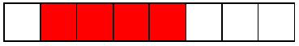
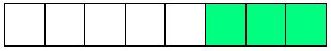
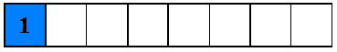
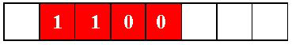
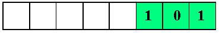

CAMPOS DE BITS
Declaración
La declaración de un campo de bits se realiza de una de tres diferentes formas:
Forma 1:
struct etiqueta { tipo entero campo_1: cantidad de bits;
tipo entero campo_2: cantidad de bits;
tipo entero campo_3: cantidad de bits;
. . .
. . .
tipo entero campo_n: cantidad de bits;} lista_de_variables;
Forma 2:
struct { tipo entero campo_1: cantidad de bits;
tipo entero campo_2: cantidad de bits;
tipo entero campo_3: cantidad de bits;
. . .
. . .
tipo entero campo_n: cantidad de bits;} lista_de_variables;
Forma 3:
struct etiqueta { tipo entero campo_1: cantidad de bits;
tipo entero campo_2: cantidad de bits;
tipo entero campo_3: cantidad de bits;
. . .
. . .
tipo entero campo_n: cantidad de bits;};
Ubicación de los campos de bits en la memoria
struct datos { unsigned char A:1;
unsigned char B:4;
unsigned char C:3;};
Referencia a un campo de bits
struct datos { unsigned char A:1;
unsigned char B:4;
unsigned char C:3;}BIT;
BIT.A

BIT.B
BIT.C
Asignación de valores en un campo de bits
struct datos { unsigned char A:1;
unsigned char B:4;
unsigned char C:3;}BIT;
BIT.A=1
BIT.B=0xC
BIT.C=5
